CLAUDE’S PICK
Amazon Aurora MCP 서버 — LLM 에이전트와 데이터베이스 연결 표준화

LLM 기반 에이전트가 SQL을 직접 작성하지 않고도 자연어 명령으로 데이터베이스를 조작할 수 없는 문제를 해결하기 위해 AWS가 제공하는 MCP 서버 솔루션. Aurora MySQL, PostgreSQL, DSQL 등 주요 데이터베이스 플랫폼용 공식 MCP 서버를 통해 에이전트가 자연어를 SQL 쿼리로 변환하여 실행하고, 스키마 최적화와 디버깅을 자동으로 수행할 수 있도록 지원한다.
핵심 포인트: 핵심 기여: 관계형, NoSQL, 그래프, 벡터, 데이터 웨어하우스 전 계층의 데이터베이스에 MCP 표준 연결을 제공하며, JSON 설정만으로 Claude, Cursor, Google Gemini 등 MCP 호환 모든 LLM 도구에서 즉시 활용 가능하게 통합했다.
🔗 itworld.co.kr/article/4184249/자연어로-데이터베이스…
기타 (Others)
Amazon Bedrock Data Automation — 지능형 문서 처리 파이프라인 구축
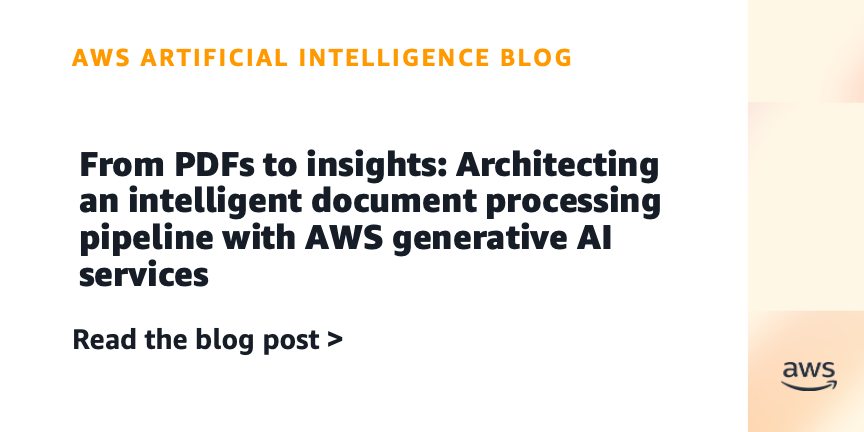
조직이 매일 처리하는 수백만 개의 문서에서 기존 OCR 솔루션은 텍스트만 추출하고 문맥과 의미를 이해하지 못해 수동 개입이 필요한 병목 현상을 발생시킨다. Amazon Bedrock Data Automation은 문서 분류, 데이터 추출, 정규화, 검증을 자동화하는 관리형 서비스로서 멀티모달 콘텐츠에서 의미 있는 인사이트를 추출하고 신뢰도 점수로 정확성을 보장하며 최대 3000페이지와 500MB의 다양한 파일 형식을 처리할 수 있다.
핵심 포인트: 핵심 성과: 자동 문서 분류 및 지능형 라우팅으로 수동 정렬 제거, 통합 멀티모달 추론 API로 데이터 준비 시간 단축, 최첨단 기초 모델과 작업별 모델 조합으로 업계 최고 수준의 정확도 제공.
🔗 aws.amazon.com/blogs/machine-learning/fro…
기타 (Others)
HarnessX — AI 에이전트 실행 환경의 자동 진화 기술


현재 AI 에이전트의 성능은 수작업으로 제작된 정적 런타임 환경(프롬프트, 도구, 메모리, 제어 흐름)에 의존하고 있어 새로운 모델이나 작업마다 맞춤형 구성이 필요한 문제가 있다. HarnessX는 타입화된 프리미티브를 조합 대수로 조합하고, 실행 추적 기반의 다중 에이전트 진화 엔진 AEGIS를 통해 이를 자동으로 적응시킨 후, 실행 궤적을 에이전트 하네스와 모델 학습 신호로 변환하여 폐루프를 구성한다.
핵심 포인트: 핵심 성과: ALFWorld, GAIA, WebShop, tau3-Bench, SWE-bench Verified 등 5개 벤치마크에서 평균 14.5% 성능 향상(최대 44.0%), 특히 기저 성능이 낮을수록 더 큰 개선 효과를 보임.
논문 (Papers)
AI & RESEARCH
DR-DCI: 동적 워크스페이스 확장을 통한 대규모 말뭉치 상호작용 확장
대규모 말뭉치에 대한 에이전트 검색에서 기존 검색기 중재 인터페이스는 순위 결과나 제한된 문서 보기만 제공하여 에이전트의 정보 재구성 및 제약 검증 능력을 제한한다. DR-DCI는 검색을 에이전트 호출 가능한 작업으로 취급하여 관련 문서를 동적으로 로컬 워크스페이스로 가져온 후 그 내에서 직접 말뭉치 상호작용 연산을 수행한다. 이는 검색 수준의 재현율과 정밀도 연산을 결합하여 확장성과 정확성을 동시에 달성한다.
핵심 포인트: 핵심 성과: Browsecomp-Plus에서 71.2% 정확도 달성으로 기존 방식 대비 8.3포인트 개선, 도구 사용량과 벽시간 단축. 100만 개에서 2천만 개 문서 규모까지 안정적으로 확장 가능하며 BM25 등 기존 방식은 대규모에서 성능 저하.
논문 (Papers)
MiniMax Sparse Attention — 대규모 컨텍스트 처리의 이차 비용 28배 감소
초장기 컨텍스트 처리를 위해 LLM이 수백만 개 토큰을 처리해야 하지만 소프트맥스 어텐션의 이차 비용이 배포 규모에서 실행 불가능한 문제가 있다. MiniMax Sparse Attention은 그룹화된 쿼리 어텐션 기반의 블록 단위 희소 어텐션 기법으로, 인덱스 브랜치가 키-값 블록을 점수 매기고 각 그룹별로 상위 k개 부분집합을 선택해 그룹별 희소 검색을 가능하게 한다. 메인 브랜치는 선택된 블록에 대해서만 정확한 블록-희소 어텐션을 수행한다.
핵심 포인트: 핵심 성과: 109B 파라미터 모델에서 1M 컨텍스트 시 토큰당 어텐션 연산 28.4배 감소, H800에서 프리필 14.2배, 디코딩 7.6배 벽시계 속도 향상
논문 (Papers)
OKF: Google의 Open Knowledge Format 기반 연구 Wiki 구축
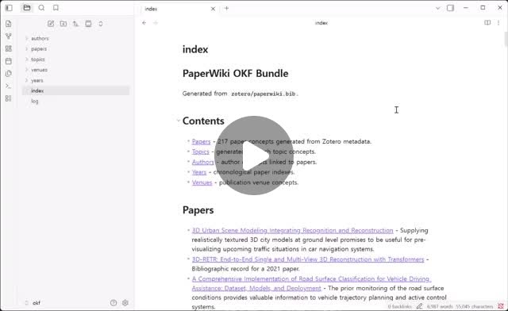
LLM 기반 Wiki 제작 시 각자 다른 포맷을 사용하던 문제를 해결하기 위해 Google이 발표한 Open Knowledge Format. 표준 Markdown 링크, YAML 메타데이터, 필수 type 필드로 AI 에이전트의 파싱을 용이하게 한다. 실제 구현 사례로 Zotero의 bibtex 추출, Claude/Codex를 통한 자동 요약 생성, Obsidian 기반 Wiki 구축 프로세스를 제시한다.
핵심 포인트: 핵심 기여: OKF 기반 연구 Wiki 자동화 파이프라인으로 논문 데이터 수집부터 요약 생성까지 표준화, 추후 venue별 통합 및 태그 정규화 작업으로 데이터 품질 개선
🔗 threads.com/@dalbom/post/DZpuwqhCBU1?xmt=…
기타 (Others)
AI 에이전트 패턴 7가지: 데이터 과학자가 알아야 할 에이전트 아키텍처
데이터 과학자 80%가 AI 에이전트 구축을 원하지만 적절한 패턴 선택 방법을 모르는 문제를 다룬다. 병렬 실행, 순차 실행, 루프, 라우터, 애그리게이터 등 7가지 에이전트 패턴을 소개하며, 각 패턴의 사용 시점과 특성을 설명한다. 작업의 독립성, 의존성, 입력 다양성, 출력 통합 필요성에 따라 올바른 패턴을 선택하면 에이전트 워크플로우 전체를 최적화할 수 있다.
핵심 포인트: 핵심 기여: 7가지 에이전트 패턴(병렬, 순차, 루프, 라우터, 애그리게이터 등)을 실무별로 분류하여 패턴 선택의 명확한 기준과 사용 시나리오를 제시한다.
🔗 threads.com/@matt_dancho/post/DZpTc8hIKTO
기타 (Others)
Google — 바이브 코딩 이후의 새로운 소프트웨어 개발 생명주기
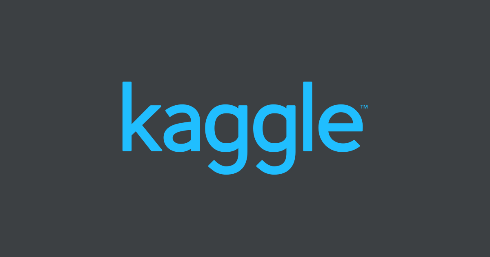
AI 코딩 도구의 등장으로 소프트웨어 개발 방식이 근본적으로 변화하고 있다. 구글이 공개한 51페이지 리포트는 바이브 코딩과 에이전틱 엔지니어링의 차이를 정리하고, 프롬프트 엔지니어링보다 컨텍스트 엔지니어링의 중요성을 강조한다. AI 코딩 에이전트를 실제 개발 프로세스에 통합하는 방법과 테스트, 리뷰, 배포까지 포함한 새로운 소프트웨어 개발 생명주기(SDLC) 구조를 제시하며, 개발자의 역할이 코더에서 오케스트레이터로 전환되는 흐름을 설명한다.
핵심 포인트: 핵심 기여: 바이브 코딩 시대의 종료와 에이전틱 엔지니어링의 실무 적용 방안을 제시하며, 컨텍스트 엔지니어링 개념 도입과 테스트-리뷰-배포를 포함한 완전한 SDLC 구조 재설계를 제안한다.
🔗 kaggle.com/whitepaper-the-new-SDLC-with-v…
기타 (Others)
SIA: 프롬프트와 가중치를 실시간 업데이트하는 자가 개선 AI
기존 AI 개선 방식은 프롬프트 최적화와 모델 가중치 학습을 독립적으로 진행하는 한계가 있었다. SIA는 피드백 에이전트가 상황을 판단하여 프롬프트 수정과 LoRA 기반 강화학습을 실시간으로 번갈아 수행함으로써 이 문제를 해결한다. 프롬프트는 외적 규칙과 도구를 개선하고 가중치 학습은 도메인 직관을 채우는 방식으로, 배포 후 실행 시마다 모델이 스스로 진화하며 인간의 개입이라는 병목을 제거한다.
핵심 포인트: 핵심 기여: 프롬프트 스캐폴딩과 가중치 업데이트를 동적으로 결합하여 법률 벤치마크와 CUDA 최적화 등에서 눈에 띄는 효율 향상을 달성하며, 안드레이 카파시의 리서치 에이전트를 뛰어넘은 자동 개선 루프 구조 구현.
논문 (Papers)
Memory Caching — RNN의 메모리 한계를 극복한 구글의 효율적 AI 아키텍처
트랜스포머는 뛰어난 성능에도 불구하고 입력 길이에 따라 연산량이 기하급수적으로 증가하는 이차 복잡도 문제를 안고 있다. 구글 리서치와 코넬대학, USC 연구진은 메모리 캐싱 기법을 통해 기존 RNN의 건망증 문제를 해결했다. 모델이 텍스트 처리 과정에서 중요한 중간 상태들을 선택적으로 저장하고 필요할 때 참조하도록 만든 이 방식은 트랜스포머의 성능에 근접하면서도 선형 복잡도를 유지하는 획기적인 솔루션을 제시한다.
핵심 포인트: 핵심 성과: 메모리 캐싱이 적용된 RNN은 긴 문맥 인컨텍스트 리콜 작업에서 기존 최첨단 RNN을 크게 앞질렀으며, 트랜스포머 수준의 성능을 선형 복잡도 O(L)로 달성했다.
🔗 linkedin.com/posts/suk-hyun-k-31ba9b369_a…
기타 (Others)
MiniMax M3 — 오픈웨이트 코딩 모델 59% SWE-Bench Pro 달성
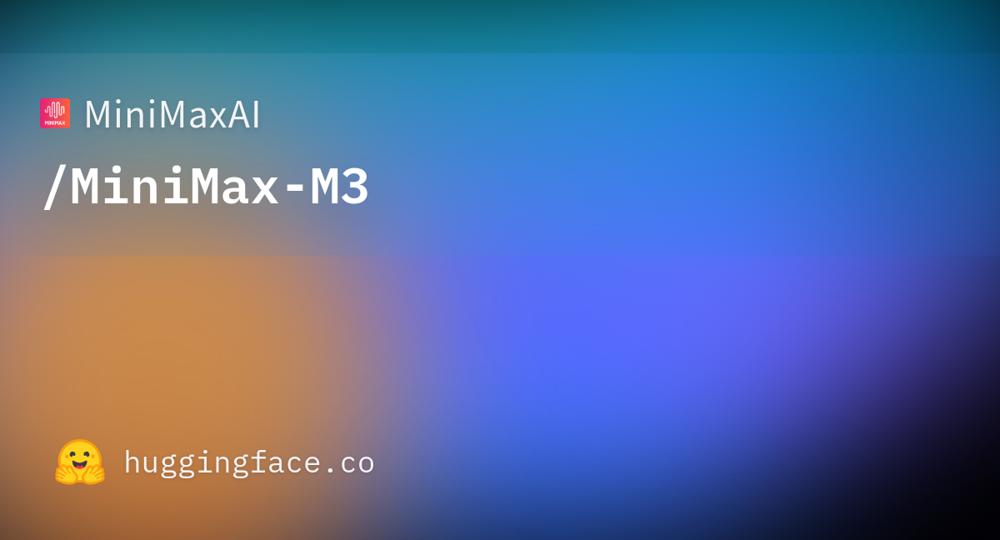
장문 컨텍스트 처리 시 KV 캐시 병목 현상이 LLM 성능을 저하시키는 문제를 해결하기 위해 MiniMax가 개발한 오픈웨이트 모델 M3. Sparse Attention 아키텍처를 통해 경량 인덱스 브랜치로 필요한 블록을 선별 처리하여 100만 토큰 초장문 컨텍스트를 지원하면서도 네이티브 멀티모달 기능을 갖춤. SWE-Bench Pro에서 59% 성공률을 기록하며 프론티어급 폐쇄형 모델 수준의 코딩 성능을 달성했다.
핵심 포인트: 핵심 성과: SWE-Bench Pro에서 59% 성공률 달성하며 주요 폐쇄형 모델과 동등 수준의 코딩 성능 구현, Sparse Attention으로 100만 토큰 컨텍스트 지원 시 KV 캐시 용량과 연산 비용을 극한 최적화
🔗 huggingface.co/MiniMaxAI/MiniMax-M3
기타 (Others)
DEVTOOLS & OPEN SOURCE
Hyper-Extract — 비정형 문서를 지식 그래프로 자동 구조화
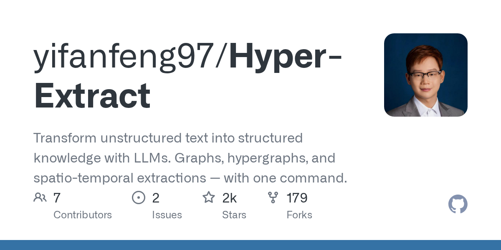
RAG 시스템의 성능 저하가 데이터 추출 단계의 부실한 전처리에서 비롯되는 문제를 해결하는 오픈소스 도구. 복잡한 비정형 문서를 목적에 맞게 리스트, 지식 그래프, 하이퍼그래프, 시공간 그래프 등 8가지 구조화된 형식으로 자동 변환하며, GraphRAG, LightRAG 등 10개 이상의 추출 엔진과 80개 이상의 YAML 템플릿을 제공한다.
핵심 포인트: 핵심 기여: 단일 명령어로 8가지 지식 구조 지원, 10개 이상의 LLM 기반 추출 엔진 탑재, 80개 이상의 즉시 사용 가능한 템플릿 제공으로 데이터 전처리 단계의 복잡성 대폭 단순화.
🔗 github.com/yifanfeng97/Hyper-Extract
GitHub
Ponytail — AI 에이전트의 불필요한 코드 생성을 막는 오픈소스 룰셋
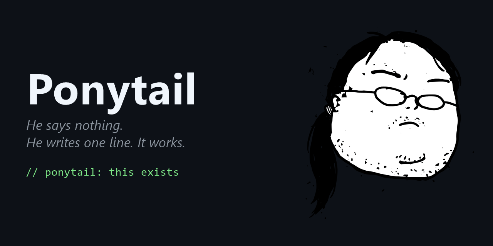
AI 에이전트는 단순한 요청도 과도한 코드를 생성하는 경향이 있다. 예를 들어 날짜 입력칸 하나를 요청하면 외부 라이브러리 설치, 래퍼 컴포넌트 작성, 스타일시트 추가 등 불필요한 작업을 수행한다. Ponytail은 에이전트가 코드를 작성하기 전에 만들기 전에 안 만들어도 되는지, 이미 있는 기능을 사용할 수 있는지, 정말 필요한 기능인지를 먼저 묻도록 하는 규칙셋을 적용한다. 이를 통해 코드량 8094% 감소, 비용 4777% 절감을 달성한다.
핵심 포인트: 핵심 성과: Claude API 기준 코드량 8094% 감소, 지연시간 36배 단축, 비용 42~75% 절감. MIT 라이선스 오픈소스로 공개 며칠 만에 GitHub 별 8천 개 획득.
🔗 github.com/DietrichGebert/ponytail
GitHub
Learn Harness Engineering — AI 에이전트 신뢰성을 위한 하네스 설계 가이드
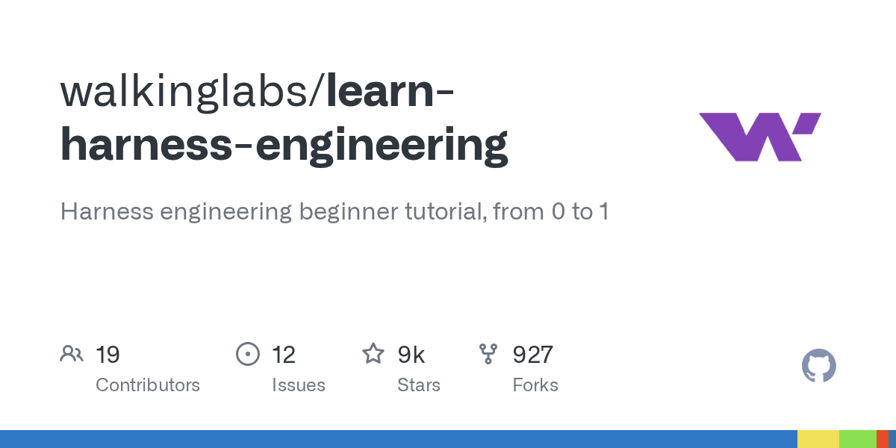
AI 에이전트가 작업을 완료하지 못하는 문제는 모델의 한계가 아니라 에이전트를 감싸는 하네스 환경 설계의 부족에서 비롯된다. Learn Harness Engineering은 스코프 정의부터 세션 상태 유지까지 에이전트의 신뢰성을 향상시키기 위한 체계적인 설계 가이드를 제공하는 오픈소스 프로젝트다. OpenAI와 Anthropic의 최신 하네스 엔지니어링 이론과 실무를 종합하여 에이전트 개발자들이 참고할 수 있도록 14개 언어로 정리되어 있다.
핵심 포인트: 핵심 기여: 스코프 정의, 상태 관리, 검증, 제어 메커니즘 등 AI 에이전트 신뢰성을 위한 완전한 하네스 설계 프레임워크를 제시하며, 실제 개발자들이 에이전트 구축 시간을 2주에서 1일로 단축할 수 있을 정도로 실질적인 가이드를 제공한다.
🔗 github.com/walkinglabs/learn-harness-engi…
GitHub
text-to-lottie — 텍스트 프롬프트로 Lottie 애니메이션 자동 생성
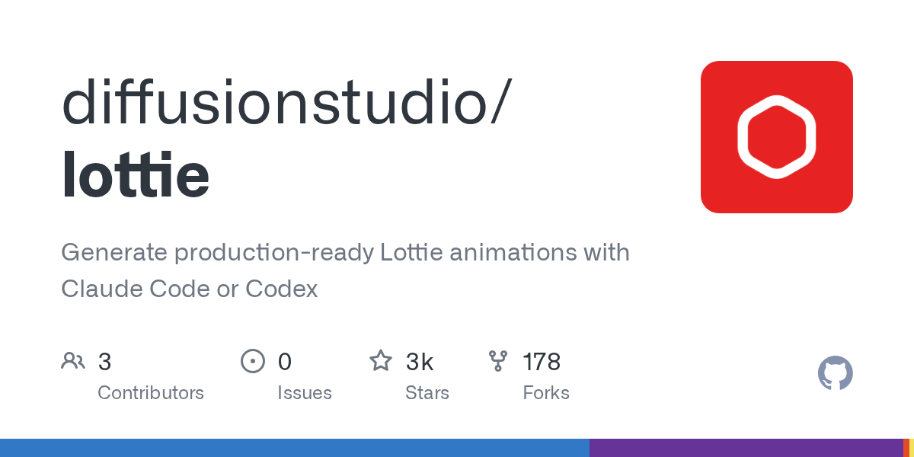
개발자가 After Effects 없이도 애니메이션을 제작하고, 디자이너와의 반복적인 커뮤니케이션 비용을 줄이기 어려운 문제를 해결하는 오픈소스 도구. Claude Code나 Codex 터미널에서 텍스트 프롬프트 하나로 프로덕션 수준의 Lottie JSON 파일을 생성하며, SVG 경로와 모션 디자인 용어를 함께 제공하면 TSLA 캔들스틱 차트, Spotify 로고 애니메이션, Apple 그래디언트 효과 등 고품질 결과물을 즉시 얻을 수 있다.
핵심 포인트: 핵심 성과: 텍스트 프롬프트만으로 제작 가능한 Lottie 애니메이션으로 개발 생산성 향상 및 디자인 리소스 비용 절감. SVG 데이터와 모션 디자인 용어(ease-in-out, trim-path 등) 활용 시 프로덕션 수준의 품질 달성.
🔗 github.com/diffusionstudio/lottie
GitHub
Peter Steinberger: AI 에이전트를 위한 오케스트레이터 루프 공개
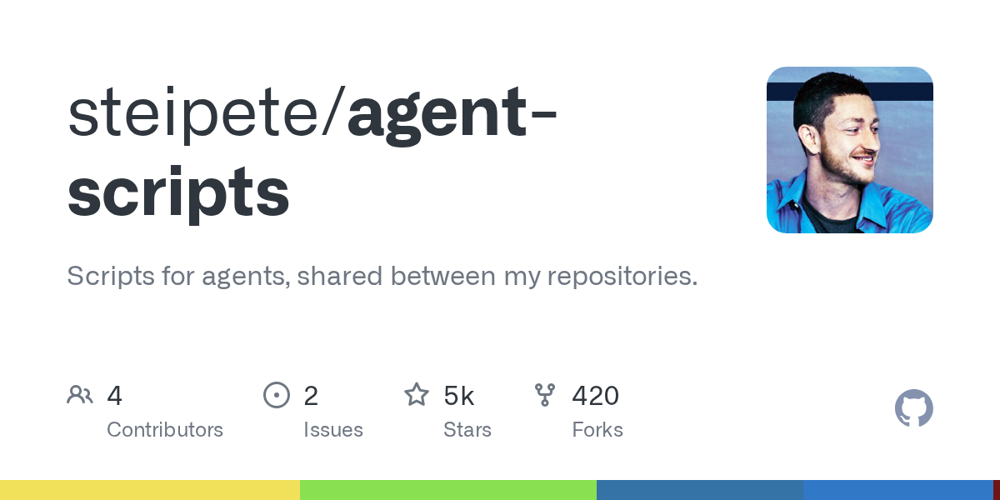
AI 에이전트에게 단순히 프롬프트를 지시하는 방식의 한계를 지적하고, 대신 에이전트가 따를 루프 구조를 설계해야 한다는 개념이 확산되고 있다. OpenAI 소속 개발자 Peter Steinberger가 자신의 에이전트 운영 방식을 문서화하여 공개했으며, 이는 공장장처럼 5분마다 작업 큐를 검사하고 워커 스레드에 작업을 배분하는 오케스트레이터 패턴을 제시한다. 문서의 절반은 금지사항으로 구성되어 있으며, 워커의 부하 제한, 과도한 재지시 방지, 자율 작업 존중 등의 원칙이 핵심이다.
핵심 포인트: 핵심 성과: GitHub 18만 개 스타를 받은 OpenClaw 에이전트를 만든 개발자의 실제 운영 루프를 문서화했으며, 오케스트레이터 패턴을 통해 AI 에이전트의 자율성과 효율성을 극대화하는 구체적 방법론을 제시했다.
🔗 github.com/steipete/agent-scripts/blob/ma…
GitHub
PRODUCT & INDUSTRY
ui-skills — AI 생성 디자인의 ‘싸구려 같은 느낌’을 규칙으로 정의해 해결

AI가 웹사이트를 생성할 때 평균적이고 밋밋한 결과물만 내놓는 문제가 있다. 이는 AI가 학습 데이터의 평균값을 추출하면서 여백, 모션, 접근성 등 세련된 디테일을 놓치기 때문이다. 파리의 디자인 엔지니어 Ibelick이 10년간 축적한 화면 디테일 규칙을 명시적인 텍스트로 문서화하고 AI에게 직접 제공하는 방식으로 이 문제를 해결했다. 좋은 UI 설계의 암묵지를 AI가 이해할 수 있는 형태로 변환한 ui-skills는 110개의 고품질 스킬을 담은 디렉토리로 제공된다.
핵심 포인트: 핵심 기여: 말로 설명하기 어려운 UI 디자인 안목을 글로 명시화하여 AI의 평균값 편향 문제를 직접적으로 해결하고, 접근성, 모션, 프레임워크, 성능 등 110개의 구체적 스킬 기준을 제시하여 AI 생성 디자인의 품질을 한 단계 높였다.
기타 (Others)
Claude Design — 데스크톱 앱에서 이용 가능
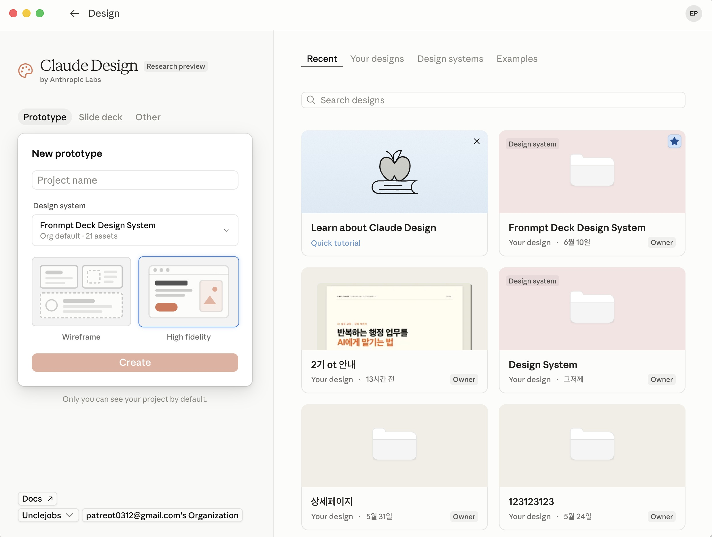
Anthropic의 Claude 디자인 기능이 이제 데스크톱 애플리케이션에서도 사용할 수 있게 되었다. 기존에 웹 기반으로만 제공되던 Claude의 디자인 기능이 데스크톱 플랫폼으로 확대되면서 사용자들이 더욱 편리하게 디자인 작업을 수행할 수 있게 된 것이다.
핵심 포인트: 핵심 성과: Claude 디자인 기능의 크로스 플랫폼 지원 확대로 데스크톱 환경에서의 접근성 및 작업 효율성 향상
🔗 threads.com/@unclejobs.ai/post/DZhp-rhCd9…
기타 (Others)
Anthropic — Claude Fable 5의 비밀 성능 저하 정책 공식 사과
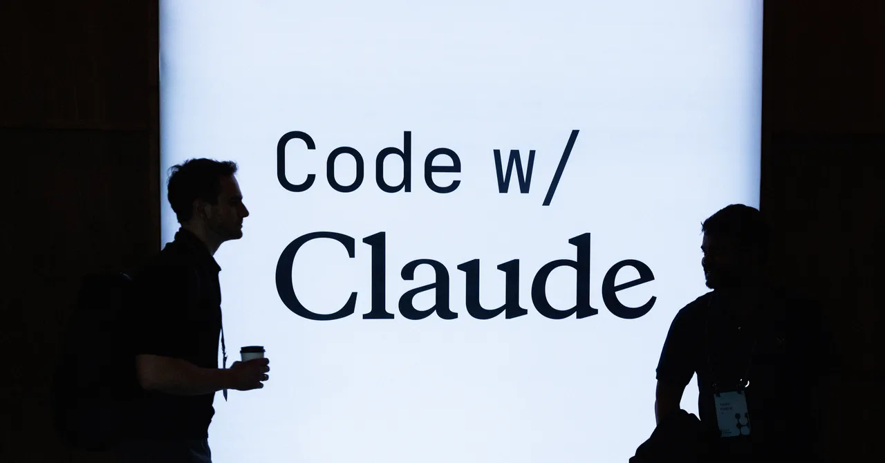
앤트로픽이 Claude Fable 5에 적용한 특수 분류기가 AI 연구 관련 쿼리에서 사용자에게 알리지 않고 모델 성능을 은밀하게 저하시키는 문제가 발생했다. 외부 커뮤니티는 거부 응답 대신 낮은 품질의 답변을 생성하도록 유도하는 방식이 연구자들의 판단을 방해하고 투명성을 훼손한다고 지적했다. 이에 앤트로픽은 WIRED를 통해 잘못된 트레이드오프를 인정하고 가드레일 정책을 공식 철회했다.
핵심 포인트: 핵심 이슈: 앤트로픽이 전체 트래픽의 약 0.03%에 영향을 미치는 스티어링 벡터와 파라미터 효율적 파인튜닝을 통해 AI 연구 관련 요청에 대해 거부 대신 의도적으로 품질을 낮춘 응답을 제공했으며, 이는 연구자들이 모델의 숨겨진 개입을 감지할 수 없게 만드는 투명성 문제를 야기했다.
🔗 wired.com/story/anthropic-responds-to-bac…
기타 (Others)